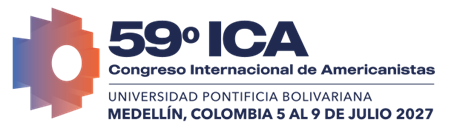
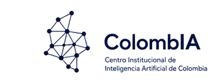

IV Coloquio Internacional de Estudiantes de Lengua Española 2026
Capacitar al Estado para usar IA generativa: competencias propuestas para servidores públicos en Colombia
Daniel Fernando De León Castro
Embajador de ICA Joven
Universidad de Córdoba · Maestría en Educación con Innovación e Inteligencia Artificial
CIIAC · Centro Institucional de Inteligencia Artificial de Colombia
Hacemos parte del 59.º Congreso Internacional de Americanistas como Embajadores de ICA Joven.
Daniel De León · Embajador de ICA Joven

ICA JovenEmbajadores en el congreso
CASO HIPOTÉTICO
Una oficina de beneficios sociales
Veamos las seis habilidades en acción. Cientos de solicitudes y poco tiempo: una funcionaria usa IA para resumir expedientes y redactar respuestas. Sigamos una solicitud por su proceso.
Idea central
Capacitar al Estado es educación pública
Pregunta abierta
Para cerrar
Idea central
Usar bien la IA exige preparación y criterio verificable.
Por eso
Capacitar al Estado es una forma de educación pública.
¿Y ahora qué?
¿Cómo adaptar esta formación a territorios y comunidades diversas?
Gracias.
59.º Congreso Internacional de Americanistas
Medellín, 5 al 9 de julio de 2027
59.º Congreso Internacional de Americanistas
Medellín, 5 al 9 de julio de 2027
Sector público y sector privado
Cuando la IA se equivoca, ¿qué se pierde?
La pregunta
Un error deja de ser un fallo de producto
Sector privado
El error suele costar dinero o reputación.
Sector público
El error puede costar un derecho.
El servidor público ejerce funciones del Estado, y la función del Estado es hacer cumplir los derechos de la ciudadanía.Sin respuesta fácil
¿Qué pasa si un funcionario se equivoca por un mal uso de la IA?
Una ayuda negada por error
Un dato personal expuesto
Una decisión injusta
La brecha
Falta un marco para quien usa la herramienta
Lo que hay
Los instrumentos colombianos revisados obligan a las entidades.
CONPES 4144 · Directiva Presidencial 03 de 2021 · Decreto 1263 de 2022Lo que falta
No enumeran qué competencias necesita la persona que usa la herramienta.
Seis habilidades propuestas
Tres son las que más se repiten
Otras tres, con menos respaldo
1
Proteger datos e información
5 de 8 organizaciones
2
Verificar lo generado y responder por ello
5 de 8 organizaciones
3
Evaluar equidad, ética y legalidad
5 de 8 organizaciones
4
Decidir cuándo no usar IA
2 de 8 organizaciones
5
Entender cómo falla la IA
2 de 8 organizaciones
6
Formular instrucciones con contexto
2 de 8 · respaldo débil
Referencias
Fuentes del trabajo
- De León Castro, D. F. (2026). Competencias propuestas para el uso de IA generativa por servidores públicos y contratistas de la rama ejecutiva en Colombia [Manuscrito en preparación].
- Asociación Española para el Estudio, Promoción y Desarrollo del Marco de Competencias Profesionales en Contratación Pública. (2024). Guía práctica para el uso de la IA generativa por empleados públicos.
- Colombia, Departamento Nacional de Planeación. (2025). Documento CONPES 4144: Política nacional de inteligencia artificial.
- Colombia, Presidencia de la República. (2021). Directiva Presidencial 03 de 2021.
- Colombia, Presidencia de la República. (2022). Decreto 1263 de 2022.
- 59.º Congreso Internacional de Americanistas. (2026). Sitio oficial. https://congresoica.org/ (consultado el 17 de noviembre de 2026).
- Constitución Política de Colombia. (1991). Art. 123.
- Government Chief Digital Officer. (2025). Responsible AI guidance for the public service: GenAI. Nueva Zelanda.
- Inter-American Development Bank. (2026). From individual AI to institutional transformation in the public sector.
- OECD. (2025). Governing with artificial intelligence: The state of play and way forward in core government functions. OECD Publishing. https://doi.org/10.1787/795de142-en
- Royal Civil Service Commission y GovTech Agency. (2025). AI skills assessment survey report. Bután.
- Tribunal de Contas da União. (2024). Guia de uso de inteligência artificial generativa no TCU.
Lista completa del núcleo documental (49 obras) en el manuscrito.
59.º Congreso Internacional de Americanistas
Medellín, 5 al 9 de julio de 2027
SedeUniversidad Pontificia Bolivariana (UPB)Circular 1 #70-01, barrio Laureles
Con el apoyo deAlcaldía de Medellín
Campus de la UPB · Laureles, Medellín
ICA Joven
Un espacio para jóvenes investigadores
QuiénesEstudiantes e investigadores de hasta 30 años
Qué se presentaPonencias individuales, de hasta dos autores
ModalidadPresencial o virtual (Teams)
IdiomasEspañol, portugués, inglés, francés, alemán e italiano
31 ene 2027
Cierre de propuestas
Escanea para ver el congreso
Sé parte del congreso
congresoica.org
Instagram · @congresoica
YouTube · @CongresoICA
Ponencias individuales · hasta el 31 de enero de 2027